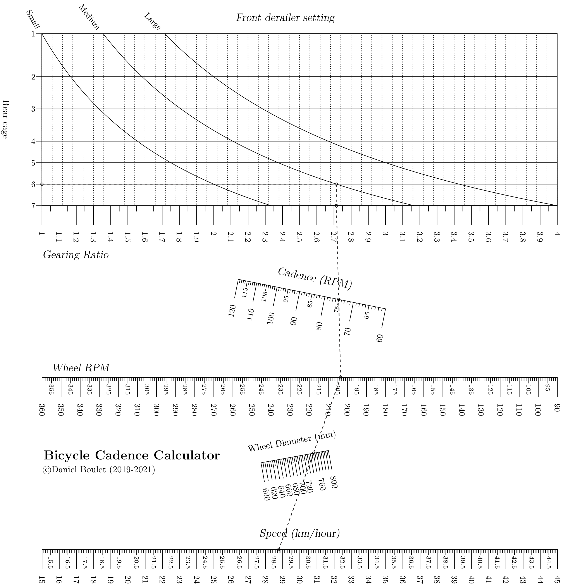
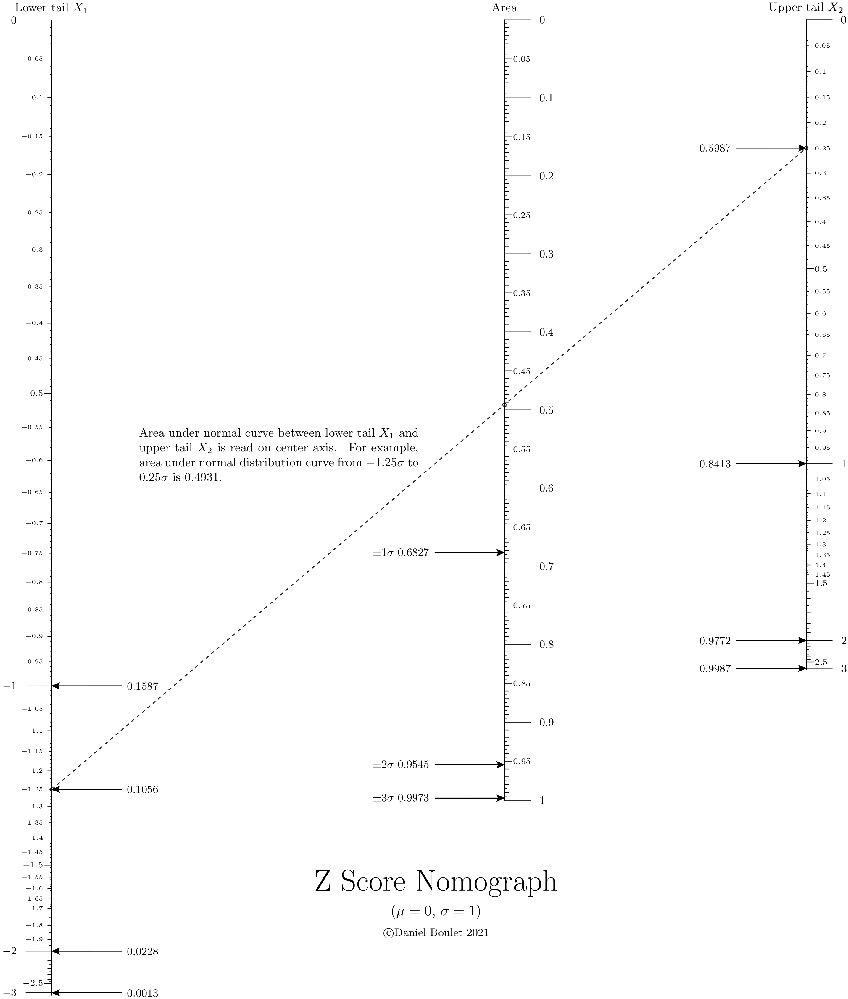

Examples¶
The following examples illustrate practical applications of nomographs. Each example includes background and the underlying math for the nomograph construction. Source code shows the implementation.
Gasoline Price comparison¶
Background¶
Comparing the unit price of a commodity with different units of measure and currencies is greatly simplified with a nomograph. In this example. cross border travellers between the United States and Canada can easily compare the cost of gasoline on both sides of the border. Moreover, by drawing an isopleth thorough the currency rate at par (1.0000) they can directly convert dollars per litre to dollars per USG. This nomograph implements the following formula:
\(\frac{CAD}{L} = \frac{CAD}{USD} \times \frac{USD}{US Gal} \div \frac{L}{US Gal}\)
This equation follows the form of a Type 2 nomograph where:
\(F_1(u_1) = \frac{CAD}{L}\),
\(F_2(u_2) = \frac{CAD}{USD}\)
and
\(F_3(u_3) = \frac{USD}{US Gal} \div 3.78541 \frac{L}{US Gal}\)
Generated nomograph¶

Source code¶
1"""
2 ex_gasoline_pricing.py
3
4 Gasoline price converter
5"""
6
7from pynomo.nomographer import *
8import sys
9from pyx import *
10
11sys.path.insert(0, "..")
12
13# allows use of latex commands in PyX such as \frac{a}{b} and \par
14pyx.text.set(text.LatexEngine)
15
16N_params_1 = {
17 "u_min": 1.1,
18 "u_max": 1.6,
19 "function": lambda u: u,
20 "title": r"$\frac{CAD}{L}$",
21 "tick_levels": 4,
22 "tick_text_levels": 3,
23 "text_format": r"$\$%3.3f$",
24 "scale_type": "linear smart",
25 "tick_side": "left",
26}
27
28N_params_2 = {
29 "u_min": 1.0,
30 "u_max": 1.5,
31 "function": lambda u: u,
32 "title": r"$\frac{CAD}{USD}$",
33 "tick_levels": 4,
34 "tick_text_levels": 3,
35 "text_format": r"$%3.4f$",
36 "scale_type": "linear smart",
37 "title_x_shift": 0.5,
38 "title_rotate_text": True,
39}
40
41N_params_3 = {
42 "u_min": 3.0,
43 "u_max": 5.0,
44 "function": lambda u: u / 3.78541,
45 "title": r"$\frac{USD}{US Gal}$",
46 "tick_levels": 4,
47 "tick_text_levels": 2,
48 "scale_type": "linear smart",
49 "text_format": r"$\$%3.3f$",
50 "scale_type": "linear smart",
51}
52
53
54block_1_params = {
55 "block_type": "type_2",
56 "f1_params": N_params_1,
57 "f2_params": N_params_2,
58 "f3_params": N_params_3,
59 "isopleth_values": [[1.3, 1.4, "x"]],
60}
61
62main_params = {
63 "filename": "ex_gasoline_pricing.pdf",
64 "paper_height": 11.0 * 2.54 / 2.0,
65 "paper_width": 8.5 * 2.54 / 2.0,
66 "block_params": [block_1_params],
67 "transformations": [("rotate", 0.01), ("scale paper",)],
68 "title_str": r"\huge \textbf{Gas Price Converter}",
69 "title_y": 13.50,
70 "title_box_width": 15.0,
71 "extra_texts": [
72 {
73 "x": 1.0,
74 "y": 12.5,
75 "text": r"\noindent Is gasoline cheaper \
76 south of the 49\textsuperscript{th}? Use this gas price \
77 converter to be sure. In the example \
78 shown, \$1.300 $\frac{CAD}{L}$ is the same price as \$3.52 $\frac{USD}{US Gal}$ if the exchange rate is 1.40 $\frac{CAD}{USD}$.",
79 "width": 8.0,
80 },
81 {
82 "text": r"\copyright Daniel Boulet (2019-2021)",
83 "x": 3.0,
84 "y": -0.0,
85 },
86 ],
87 # 'make_grid': True
88}
89Nomographer(main_params)
Voltage Divider¶
Theory and background¶
In electronics, resistive voltage dividers are used for a variety of purposes. The formula for a resistive voltage divider is [Wik21b]:
\(\frac{V_{out}}{V_{in}} = \frac{R_b}{(R_a + R_b)}\)

When designing voltage dividers, constraints may demand engineers choose resistors from a set of “preferred values” [Wik21a]. These values are discrete and engineers must select the best combination of resistors based on tolerance and the available preferred values. Similar voltage ratios can be obtained with different combinations of resistor values.
The voltage divider nomograph links input voltage (\(V_{in}\)), output voltage (\(V_{out}\)) and a pair of resistor values into a single nomograph. Pynomo’s Type 5 blocks are well suited for plotting relationships between pairs of discrete values. A vertical line dropped from the intersection of \(R_a\) values and \(R_b\) values reveals the \(V_{out}\) / \(V_{in}\) voltage ratio. Alignment with a Type 2 block allows the engineer to determine \(V_{out}\) given \(V_{in}\) (or vice versa).
Of greater benefit is the ability to quickly determine the optimum pair of resistor values for a given application. For example, given an input voltage (9V) and desired output voltage (3.3V), the engineer draws a straight line from the \(V_{out}\) axis, through the \(V_{in}\) axis to the base of the voltage ratio graph. A perpendicular line is then drawn from the base to the top of the graph. The vertical line’s nearest approach to the intersection of \(R_a\) and \(R_b\) values represents the best combination of resistor values. It can be quickly shown that one combination of values (\(R_a\) = 6.2 and \(R_b\) = 3.6) will produce an output voltage very close to the desired value (3.3061V).
Generated nomograph¶

Source code¶
1"""
2 voltdiv_E24_resistors.py
3
4 Nomogram to calculate resistor values for simple voltage divider. This
5 along with this program. If not, see <http://www.gnu.org/licenses/>.
6"""
7
8from pynomo.nomographer import *
9import sys
10sys.path.insert(0, "..")
11
12from pyx import *
13pyx.text.set(text.LatexEngine)
14
15import numpy as np
16
17resistors = [
18 1.0, 1.1, 1.2,
19 1.3, 1.5, 1.6,
20 1.8, 2.0, 2.2,
21 2.4, 2.7, 3.0,
22 3.3, 3.6, 3.9,
23 4.3, 4.7, 5.1,
24 5.6, 6.2, 6.8,
25 7.5, 8.2, 9.1
26]
27
28# Type 5 contour
29def f1(x, u):
30 return np.log10(u * (1 - x) / x)
31
32
33block_1_params = {
34 'width': 12.0,
35 'height': 25.0,
36 'block_type': 'type_5',
37
38 'u_func': lambda u: np.log10(u),
39 'u_values': resistors,
40 'u_axis_color': pyx.color.cmyk.Red,
41 'u_title': r'\Large{$R_a$}',
42 'u_text_format': r"\normalsize{$%3.1f$}",
43
44 'v_func': f1,
45 'v_values': resistors,
46 'v_axis_color': pyx.color.cmyk.Red,
47 'v_title': r'\Large{$R_b$}',
48 'v_text_format': r"\normalsize{$%3.1f$}",
49
50 'wd_tag': 'A',
51 'wd_tick_side': 'right',
52 'wd_title':r'\Large $\frac{V_{out}}{V_{in}}$',
53 'wd_tick_levels': 5,
54 'wd_tick_text_levels': 2,
55 'wd_title_opposite_tick': True,
56 'wd_axis_color': pyx.color.cmyk.Gray,
57 'isopleth_values': [
58 [6.2, 'x', 'x'],
59 ],
60 'vertical_guide_nr': 10,
61 'manual_x_scale': True, # trick to "decompress" Ra scale
62
63}
64
65# this is non-obvious trick to find bottom edge coordinates of the grid in order
66# to align it with N nomogram
67block1_dummy = Nomo_Block_Type_5(mirror_x=False)
68block1_dummy.define_block(block_1_params)
69block1_dummy.set_block()
70
71# Let's define the N-nomogram
72N_params_3 = {
73 'u_min': block1_dummy.grid_box.params_wd['u_min'],
74 'u_max': block1_dummy.grid_box.params_wd['u_max'],
75 'function': lambda u: u,
76 'title': '',
77 'tag': 'A',
78 'tick_side': 'right',
79 'tick_levels': 2,
80 'tick_text_levels': 2,
81 'reference': False,
82 'tick_levels': 0,
83 'tick_text_levels': 0,
84 'title_draw_center': True
85}
86N_params_2 = {
87 'u_min': 6.0,
88 'u_max': 24.0,
89 'function': lambda u: u,
90 'title': r'$V_{in}$',
91 'tag': 'none',
92 'tick_side': 'left',
93 'tick_levels': 4,
94 'tick_text_levels': 3,
95 'title_draw_center': True,
96 'scale_type': 'linear smart',
97}
98N_params_1 = {
99 'u_min': 1.0,
100 'u_max': 10.0,
101 'function': lambda u: u,
102 'title': r'$V_{out}$',
103 'tag': 'none',
104 'scale_type': 'linear smart',
105 'tick_side': 'right',
106 'tick_levels': 3,
107 'tick_text_levels': 3,
108 'title_draw_center': True
109}
110
111block_2_params = {
112 'block_type': 'type_2',
113 'f1_params': N_params_1,
114 'f2_params': N_params_2,
115 'f3_params': N_params_3,
116 'isopleth_values': [
117 # Vout, Vin, ratio
118 [3.3, 9.0, 'x'],
119 ]
120}
121
122main_params = {
123 'filename': 'ex_voltage_divider.pdf',
124 'paper_height': 8.5*2.54,
125 'paper_width': 11.0*2.54,
126 'block_params': [block_1_params, block_2_params],
127 'transformations': [('rotate', 0.01), ('scale paper',)],
128 'title_str': r'\Large Voltage Divider Nomograph \par \
129 \normalsize (For E24 series values) \par \bigskip \
130 \large $V_{out}=V_{in} \cdot \frac{R_b}{R_a+R_b}$ \
131 \par \bigskip \normalsize \copyright Daniel Boulet 2018-2021',
132 'title_x': 2.0,
133 'title_y': 4.0,
134 'isopleth_params': [
135 {
136 'color': 'blue',
137 'linewidth': 'thick',
138 'linestyle': 'dashed',
139 'circle_size': 0.10,
140 },
141 ],
142}
143
144Nomographer(main_params)
Bicycle Cadence¶
Theory and background¶
Choosing the correct gears on a bicycle allows a cyclist to maintain a comfortable cadence. A higher cadence helps reduce muscle fatigue [tra21] though it does put more stress on heart and lungs. However a lower cadence for the same power output puts more stress on the rider’s knees, hips and back. [the21] Furthermore, cycling cadence will vary widely with beginning cyclists peddling more slowly (60-85 rpm) and professionals exceeding 100 rpm under certain conditions. Generally, a good cadence in cycling is between 80-100 rpm. [Hur21] The correct gear ratio can help the rider maximize their speed with a comfortable cadence.
A bicycle’s speed is the product of the wheel diameter (e.g. 700mm), the wheel’s rotation rate (in rpm) and \(\pi\). The wheel’s rotation rate is a function of the rider’s cadence and the front to rear gear ratio. As in the previous example, pairs of discrete values such as the number of teeth on the front and rear sprockets are easily represented on a Type 5 block. This nomograph combines a Type 5 block (to calculate gearing ratio) with a pair of Type 2 blocks to calculate the rider’s speed given their cadence and gear settings.
Generated nomograph¶
Source code¶
1"""
2 ex_bicycle_cadence.py
3
4 Bicycle gearing cadence and speed calculator
5"""
6from pynomo.nomographer import *
7from pyx import *
8import sys
9sys.path.insert(0, "..")
10pyx.text.set(text.LatexEngine)
11
12
13gearing = {
14 'block_type': 'type_5',
15 'wd_tag': 'ratio',
16
17 'u_func': lambda u: u,
18 'v_func': lambda x, v: v/x,
19
20 # teeth on rear cage
21 'u_values': [12.0, 14.0, 16.0, 18.0, 21.0, 24.0, 28.0],
22 'u_scale_type': 'manual point',
23 'u_manual_axis_data': {12.0: '7', 14.0: '6', 16.0: '5', 18.0: '4', 21.0: '3', 24.0: '2', 28.0: '1'},
24 'u_title': 'Rear cage',
25
26 # teeth on front derailer
27 'v_values': [28.0, 38.0, 48.0],
28 'v_scale_type': 'manual point',
29 'v_manual_axis_data': {28.0: 'Small', 38.0: 'Medium', 48.0: 'Large'},
30
31 'wd_tick_levels': 2,
32 'wd_tick_text_levels': 1,
33 'wd_tick_side': 'right',
34 'wd_title_opposite_tick': True,
35 'isopleth_values': [[14.0, 38.0, 'x']],
36
37}
38
39
40wheelrpm = {
41 'tag': 'wheelrpm',
42 'u_min': 90.0,
43 'u_max': 360.0,
44 'scale_type': 'manual point',
45 'function': lambda u: u,
46}
47
48crankrpm = {
49 'u_min': 60.0,
50 'u_max': 120.0,
51 'function': lambda u: u,
52 'title': r'\large \slshape Cadence (RPM)',
53 'tick_levels': 3,
54 'tick_text_levels': 2,
55 'scale_type': 'linear smart',
56 'tick_side':'left',
57 'title_draw_center': True,
58 # 'title_distance_center': -0.5,
59}
60
61ratio = {
62 'scale_type': 'manual point',
63 'tag': 'ratio',
64 'u_min': 1.0,
65 'u_max': 4.0,
66 'function': lambda u: u,
67 'tick_levels': 3,
68 'tick_text_levels': 1,
69}
70
71
72rotation = {
73 'block_type': 'type_2',
74 'f1_params': wheelrpm,
75 'f2_params': crankrpm,
76 'f3_params': ratio,
77 'isopleth_values': [['x', 75, 'x']],
78}
79
80
81speed = {
82 'u_min': 15.0,
83 'u_max': 45.0,
84 'function': lambda u: u,
85 'title': r'\large \slshape Speed (km/hour)',
86 'tick_levels': 5,
87 'tick_text_levels': 2,
88 'scale_type': 'linear smart',
89 'title_draw_center': True,
90 'title_distance_center': -0.5,
91}
92
93diameter = {
94 'u_min': 600.0,
95 'u_max': 800.0,
96 'function': lambda u: u*3.1415927*60.0/1000000.0,
97 'title': r'Wheel Diameter (mm)',
98 'tick_levels': 2,
99 'tick_text_levels': 1,
100 'scale_type': 'linear smart',
101 'title_draw_center': True,
102 'title_distance_center': -0.5,
103
104}
105
106wheelrpm2 = {
107 'tag': 'wheelrpm',
108 'u_min': 90.0,
109 'u_max': 360.0,
110 'function': lambda u: u,
111 'scale_type': 'linear smart',
112
113 'title': r'\large \slshape Wheel RPM',
114 'title_x_shift': -18.5,
115 'tick_levels': 5,
116 'tick_text_levels': 3,
117}
118
119
120speedblock = {
121 'block_type': 'type_2',
122 'f1_params': speed,
123 'f2_params': diameter,
124 'f3_params': wheelrpm2,
125 'mirror_x': True,
126 'isopleth_values': [['x', 750.0, 'x']],
127}
128
129
130main_params = {
131 'filename': 'ex_bicycle_cadence.pdf',
132 'block_params': [gearing, rotation, speedblock],
133 'transformations': [('rotate', 0.01), ('scale paper',)],
134 'title_str': r'\Large \textbf{Bicycle Cadence Calculator}',
135 'title_x': 3.5,
136 'title_y': 3.5,
137
138 'extra_texts': [
139 {
140 'x': -0.5,
141 'y': 11.3,
142 'text': r'\large \slshape{Gearing Ratio}',
143 },
144 {
145 'x': 7.0,
146 'y': 20.5,
147 'text': r'\large \slshape{Front derailer setting}',
148 },
149 {
150 'text': r'\copyright Daniel Boulet (2019-2021)',
151 'x': -0.5,
152 'y': 3.0,
153 },
154
155
156 ],
157 # 'make_grid':True,
158
159}
160
161Nomographer(main_params)
Z Score¶
Theory and background¶
This example extends Pynomo’s versatility by using external libraries.
Python’s scipy library is the engine behind this nomograph
which calculates the area under a normal distribution curve between
two Z scores (one negative, the other positive).
To calculate the area between two Z scores (\(Z_{upper}\), \(Z_{lower}\)) of a normal distribution one must compute the difference between the respective probability density functions \(\mathrm{PDF}(Z_{upper})\) and \(\mathrm{PDF}(Z_{lower})\). [wik07]

Recall that the functional relatinship for a Type 1 block is:
\(F1(u_1)+F2(u_2)+F3(u_3)=0\)
and
\(\mathrm{Area} = \mathrm{PDF}(Z_{upper}) - \mathrm{PDF}(Z_{lower})\)
therefore
\(\mathrm{PDF}(Z_{upper}) - Area - \mathrm{PDF}(Z_{lower})=0\).
Two Type 8 axes are aligned with \(\mathrm{PDF}(Z_{upper})\) and \(\mathrm{PDF}(Z_{lower})\) to align a Z score with its associated PDF.
Generated nomograph¶
Source code¶
1"""
2 ex_zscore.py
3
4 Nomograph to calculate area under normal curve from z-score.
5"""
6
7import scipy.stats as stats
8from pynomo.nomographer import *
9import sys
10
11sys.path.insert(0, "..")
12# allows use of latex commands in PyX such as \frac{a}{b} and \par
13from pyx import *
14
15pyx.text.set(text.LatexEngine)
16
17
18def cdf(u):
19 return stats.norm.cdf(u)
20
21
22def ppf(u):
23 return stats.norm.ppf(u)
24
25
26lmin = 0.0001
27lmax = 0.9999
28
29sd1 = cdf(1.0) - cdf(-1.0)
30sd2 = cdf(2.0) - cdf(-2.0)
31sd3 = cdf(3.0) - cdf(-3.0)
32
33
34leftpdf = {
35 "tag": "a",
36 "u_min": lmin,
37 "u_max": 0.5,
38 "function": lambda u: (u),
39 "scale_type": "manual point",
40 # extra parameters
41 "extra_params": [
42 {
43 "scale_type": "manual arrow",
44 "manual_axis_data": {
45 cdf(-1.0): r"%4.4f" % cdf(-1.0),
46 cdf(-2.0): r"%4.4f" % cdf(-2.0),
47 cdf(-3.0): r"%4.4f" % cdf(-3.0),
48 cdf(-1.25): r"%4.4f" % cdf(-1.25),
49 },
50 "arrow_length": 2.0,
51 },
52 ],
53}
54
55
56leftz = {
57 "tag": "a",
58 "u_min": ppf(lmin),
59 "u_max": ppf(0.5),
60 "function": lambda u: cdf(u),
61 "align_func": lambda u: cdf(u),
62 "title": "Lower tail $X_1$",
63 "tick_levels": 5,
64 "tick_text_levels": 4,
65 "scale_type": "linear smart",
66 "tick_side": "left",
67}
68
69
70rightpdf = {
71 "tag": "c",
72 "u_min": 0.5,
73 "u_max": lmax,
74 "function": lambda u: -(u),
75 "scale_type": "manual point",
76 # extra parameters
77 "extra_params": [
78 {
79 "scale_type": "manual arrow",
80 "tick_side": "left",
81 "manual_axis_data": {
82 cdf(3.0): r"%4.4f" % cdf(3.0),
83 cdf(2.0): r"%4.4f" % cdf(2.0),
84 cdf(1.0): r"%4.4f" % cdf(1.0),
85 cdf(0.25): r"%4.4f" % cdf(0.25),
86 },
87 "arrow_length": 2.0,
88 },
89 ],
90}
91
92
93rightz = {
94 "tag": "c",
95 "u_min": ppf(0.5),
96 "u_max": ppf(lmax),
97 "function": lambda u: cdf(u),
98 "align_func": lambda u: cdf(u),
99 "title": "Upper tail $X_2$",
100 "tick_levels": 5,
101 "tick_text_levels": 4,
102 "scale_type": "linear smart",
103}
104
105leftblock2 = {"block_type": "type_8", "f_params": leftz, "isopleth_values": [["x"]]}
106
107
108rightblock2 = {"block_type": "type_8", "f_params": rightz, "isopleth_values": [["x"]]}
109
110
111delta = {
112 "u_min": 0.0,
113 "u_max": 1.0,
114 "function": lambda u: u,
115 "scale_type": "linear smart",
116 "title": "Area",
117 "tick_levels": 5,
118 "tick_text_levels": 4,
119 "extra_params": [
120 {
121 "tick_side": "left",
122 "scale_type": "manual arrow",
123 "manual_axis_data": {
124 sd1: r"$\pm 1 \sigma$ %4.4f" % sd1,
125 sd2: r"$\pm 2 \sigma$ %4.4f" % sd2,
126 sd3: r"$\pm 3 \sigma$ %4.4f" % sd3,
127 },
128 "arrow_length": 2.0,
129 },
130 ],
131}
132
133block_diff = {
134 "block_type": "type_1",
135 "f1_params": leftpdf,
136 "f2_params": delta,
137 "f3_params": rightpdf,
138 "proportion": 1.5,
139 "isopleth_values": [[cdf(-1.25), "x", cdf(0.25)]],
140}
141
142
143main_params = {
144 "filename": "ex_zscore.pdf",
145 "paper_height": 11.0 * 2.54,
146 "paper_width": 8.5 * 2.54,
147 "block_params": [block_diff, leftblock2, rightblock2],
148 "cdfations": [("rotate", 0.01), ("scale paper",), ("polygon",)],
149 "title_x": 11.0,
150 "title_y": 3.0,
151 "title_box_width": 15.0,
152 "title_str": r"\Huge Z Score Nomograph \par \medskip \large ($\mu = 0$, $\sigma = 1$) \par \medskip \small \copyright Daniel Boulet 2021",
153 # 'make_grid':True,
154 "extra_texts": [
155 {
156 "x": 2.5,
157 "y": 16.0,
158 "text": r"\noindent Area under normal curve between lower tail $X_1$ and upper tail $X_2$ is read on center axis. \
159 For example, area under normal distribution curve from $%g \sigma$ to $%g \sigma$ is $%4.4f$."
160 % (-1.25, 0.25, cdf(0.25) - cdf(-1.25)),
161 "width": 8.0,
162 },
163 ],
164}
165
166Nomographer(main_params)
Example: Amortized loan calculator¶
Theory and background¶
This approach of constructing an amortized loan calculator is similar to one in Ref. [dOcagne99]
Equation for amortized loan [wik21a] is:
\(\frac{a}{A} = \frac{\frac{p}{100\times 12}}{1-\frac{1}{(1+\frac{p}{100\times 12})^{12n}}},\)
where \(A\) is the amount of loan, \(a\) is monthly payment amount, \(p\) interest rate per year (monthly interest rate is taken as \(p/12\)) [wik21b] and \(n\) is number of years for payment.
This equation of four variables is probably impossible to present with line and grid nomographs. For this reason a “Type 5” contour nomogram is constructed of the right hand side of the equation and left hand equation is just N-nomogram (Type 2). The two equations for nomogram construction are:
\(x = \frac{a}{A}\)
and
\(x = \frac{\frac{p}{100\times 12}}{1-\frac{1}{(1+\frac{p}{100\times 12})^{12n}}}.\)
In practice \(x\) is the x-coordinate of the canvas where nomogram is constructed.
Right hand side of equation¶
By defining coordinates \(x\,\) and \(y\,\):
\(x = \frac{\frac{p}{100\times 12}}{1-\frac{1}{(1+\frac{p}{100\times 12})^{12n}}},\)
\(y = 12n, \,\) we may solve \(y\,\) in terms of \(x\,\) and \(n\,\):
\(y = \frac{\log (\frac{x}{x-\frac{p}{100\times 12}})}{\log (1+\frac{p}{100 \times 12})} \,\)
The previous two equations are of correct form
\(y = f_1(v) \,\)
and
\(y = f_2(x,u) \,\)
for type 5 nomogram. For compressing time axis (\(y\)-axis), we transform \(y \rightarrow \log y\) and find
\(y = \log \left( \frac{\log (\frac{x}{x-\frac{p}{100\times 12}})}{\log (1+\frac{p}{100 \times 12})} \right)\,\)
\(y = \log( 12n ). \,\)
Left hand side of equation¶
Left hand side of equation
\(x = \frac{a}{A}\)
is just N-nomogram
\(F_1(u_1) = F_2(u_2)F_3(u_3) \,\)
References¶
Generated nomograph¶

Source code¶
1"""
2 ex_amortized_loan.py
3
4 Amortized loan calculator
5"""
6import sys
7sys.path.insert(0, "..")
8from pynomo.nomographer import *
9
10# Type 5 contour
11def f1(x,u):
12 return log(log(x/(x-u/(100.0*12.0)))/log(1+u/(100.0*12.0)))
13
14block_1_params={
15 'width':10.0,
16 'height':5.0,
17 'block_type':'type_5',
18 'u_func':lambda u:log(u*12.0),
19 'v_func':f1,
20 'u_values':[10.0,11.0,12.0,13.0,14.0,15.0,20.0,25.0,30.0,40.0,50.0,60.0],
21 'v_values':[1.0,2.0,3.0,4.0,5.0,6.0,7.0,8.0,9.0,10.0],
22 'wd_tag':'A',
23 'u_title':'years',
24 'v_title':r'interest rate = ',
25 'u_text_format':r"$%3.0f$ ",
26 'v_text_format':r"$%3.0f$ \%% ",
27 'isopleth_values':[[21,5,'x']]
28 }
29
30# this is non-obvious trick to find bottom edge coordinates of the grid in order
31# to align it with N nomogram
32block1_dummy=Nomo_Block_Type_5(mirror_x=False)
33block1_dummy.define_block(block_1_params)
34block1_dummy.set_block()
35
36# Let's define the N-nomogram
37N_params_3={
38 'u_min':block1_dummy.grid_box.params_wd['u_min'],
39 'u_max':block1_dummy.grid_box.params_wd['u_max'],
40 'function':lambda u:u,
41 'title':'',
42 'tag':'A',
43 'tick_side':'right',
44 'tick_levels':2,
45 'tick_text_levels':2,
46 'reference':False,
47 'tick_levels':0,
48 'tick_text_levels':0,
49 'title_draw_center':True
50 }
51N_params_2={
52 'u_min':30.0,
53 'u_max':1000.0,
54 'function':lambda u:u,
55 'title':'Loan',
56 'tag':'none',
57 'tick_side':'left',
58 'tick_levels':4,
59 'tick_text_levels':3,
60 'title_draw_center':True,
61 #'text_format':r"$%3.0f$ ",
62 'scale_type':'linear smart',
63 }
64N_params_1={
65 'u_min':0.2,
66 'u_max':3.0,
67 'function':lambda u:u,
68 'title':'monthly payment',
69 'tag':'none',
70 'tick_side':'right',
71 'tick_levels':3,
72 'tick_text_levels':2,
73 'title_draw_center':True
74 }
75
76block_2_params={
77 'block_type':'type_2',
78 'width':10.0,
79 'height':20.0,
80 'f1_params':N_params_1,
81 'f2_params':N_params_2,
82 'f3_params':N_params_3,
83 'isopleth_values':[['x',200,'x']]
84 }
85
86main_params={
87 'filename':'amortized_loan.pdf',
88 'paper_height':20.0,
89 'paper_width':20.0,
90 'block_params':[block_1_params,block_2_params],
91 'transformations':[('rotate',0.01),('scale paper',)],
92 'title_str':r'Amortized loan calculator \copyright Leif Roschier 2009',
93 'title_x': 17,
94 'title_y': 21,
95 'title_box_width': 5
96 }
97Nomographer(main_params)
Example Photography exposure¶
Theory and background¶
This example illustrates how exposure in photography depends on factors: latitude, time of day, day of year, weather, composition. It relates these to camera settings: film speed (e.g. ISO 100), aperture and shutter speed. The mathematical approach and model is taken from book written by V. Setälä [Set40]. This book illustrates the approach as nomographs but they are different compared with the one generatated here. Book uses shadow length, but we break shadow length into time, date and latitude via solar zenith angle.
The basic equation in Setälä (pp.492-494) can be extracted and written as
where parameters of (1) are listed below:
\(FS\,\) |
Film speed |
DIN value that equals \(10 \log (S) +1 \,\),where S is ISO FILM speed |
\(T\,\) |
shutter time |
\(10 \log \left( \frac{t}{1/10}\right)\) |
\(A\,\) |
aperture |
\(10 \log \left(\frac{N^2}{3.2^2}\right)\) |
\(L\,\) |
shadow length (in steps) |
two times (shadow length)/(person length) \(= 2 \arctan ( \phi) \,\), where \(\phi \,\) is solar zenith angle. |
\(W\,\) |
weather |
Clear sky, Cumulus clouds: 0, Clear sky: 1, Sun through clouds: 3, Sky light gray: 6, Sky dark gray: 9, Thunder-clouds cover sky: 12 |
\(C\,\) |
Composition |
Person under trees: -6, Inside forest : -4, Person in shadow of wall : -1, Person at open place; alley under trees : 2, Buildings; street : 5, Landscape and front matter : 7, Open landscape : 9, Snow landscape and front matter; beach : 11,Snow field; open sea : 13, Clouds : 15 |
It is to be noted that Setälä has stops ten times base-10 logarithmic. Today we think stops in base-2 logarithmic.
Shadow lenght¶
Calculation of shadow length as a function of day of year, time of day and latitude is according to [sol]. Following equations are used. For fractional year (without time information) we take
\(\gamma = (day-1+0.5)2\pi /365.\)
For time offset (eqtime) we use equation (in minutes)
\(TO = 229.18(0.000075+0.001868\cos(\gamma)-0.032077\sin(\gamma)-0.014615\cos(2\gamma)-0.040849\sin(2\gamma))\)
to calculate that error is below 17 minutes for time axis. We assume that sun is at heightest point at noon and this is the error and approximation. We calculate stops in logarithmic scale and in this case we do not need very accurate equations for time. For declination we use equation
and for hour angle
\(ha=(60h+\overline{TO})/4-180. \,\)
Solar zenith angle (\(\phi \,\)), latitude (LAT), declination (D) and hour angle (ha) are connected with equation:
\(\cos (\phi ) = \sin(LAT)sin(D)+\cos(LAT)\cos(D)\cos(ha). \,\)
This is in our desired form as a function of hour (h), day (day), latitude (LAT), solar zenith angle (\(\phi \,\)):
\(\cos (\phi ) = \sin(LAT)sin(D(\gamma(day)))+\cos(LAT)\cos(D(\gamma(day)))\cos(ha(h)) \,\).
In practice illuminance of flat surface on earth depends on solar zenith angle as \(\cos(\phi)\,\). Setälä uses shadow length that is easily measurable, but scales incorrectly, as value is proportional to \(\tan(\phi)\,\). Also Setälä sums linear value with logarithmic ones as a practical approximation. To correct these assumptions, here we assume that values for shadow length 1 and 10 for Setälä are reasonable, and an equation that scales logarithmically is found:
\(L = 0.33766 - 13.656 \log10 (\cos(\phi)) \,\)
that gives \(L=1\,\) for \(\phi = 26.565 =\arctan(1/2)\,\) and \(L=10\,\) for \(\phi = 78.69 =\arctan(10/2).\,\)
Construction of the nomograph¶
The presented equation is the following:
In order to construct the nomograph, we split the equation into four blocks and an additional block to present values as EV100.
Explanation |
Type |
|---|---|
\[x_1 \equiv \cos(\phi)=\sin(LAT)sin(D(\gamma(day)))+\cos(LAT)\cos(D(\gamma(day)))\cos(ha(h))\,\]
formed into determinant:
\[\begin{split}{{
\begin{vmatrix}
0 & \cos(\phi) & 1 \\
\frac{\cos(LAT)\cos(D(\gamma(day)))}{1+(\cos(LAT)\cos(D(\gamma(day))))} & \frac{\sin(LAT)\sin(D(\gamma(day)))}{1+(\cos(LAT)\cos(D(\gamma(day))))} & 1 \\
1 & -\cos(ha(h)) & 1 \\
\end{vmatrix} = 0
}}\end{split}\]
|
Type 9 |
\[C_1 \equiv L+W = 0.006918-13.656 \log_{10}(x_1)+W\]
split into two equations for contour construction:
\[y_1 = C_1 \,\]
\[y_1 = 0.006918-13.656 \log_{10}(x_1)+W\]
|
Type 5 |
\[C_2 \equiv L+W+C = C_1+C\]
split into two equations for contour construction:
\[y_2 = C_2\]
\[y_2 = C_1+C\]
|
Type 5 |
\[C_2 = FS-A+T\]
equals
\[C_2 -(10 \log_{10}(S)+1.0)+10 \log_{10}\left(\frac{N^2}{3.2^2} \right)-10 \log_{10}\left( \frac{1/t_i}{1/10}\right)=0,\]
where
\[t_i\equiv 1/t\]
is inverse shutter time. |
Type 3 |
Additional EV100 scale by using relation
\[C_2 =(-EV_{100}+13.654)/0.3322\]
|
Type 8 |
Maximum focal length calculator according to equation
\[t_i / f = FL\]
written as
\[-10 \log_{10}\left( \frac{1/t_i}{1/10}\right) - 10 \log_{10}\left( \frac{f}{10} \right) -10 \log_{10}\left( FL \right) = 0\]
in order to align correctly with previous equation. The values for the factor f are: DSLR (3/2), 35mm (1), DSLR image stabilization (3/8) and 35mm image stabilization (1/8). |
Type 1 |
Generated nomograph¶

Source code¶
1"""
2 ex_photo_exposure.py
3
4 Photgraph exposure.
5"""
6import sys
7sys.path.insert(0, "..")
8from pynomo.nomographer import *
9"""
10functions for solartime taken from solareqns.pdf from
11http://www.srrb.noaa.gov/highlights/sunrise/solareqns.PDF
12"""
13
14
15# fractional year
16def gamma(day):
17 return 2 * pi / 365.0 * (day - 1 + 0.5)
18# equation of time
19
20
21def eq_time(day):
22 gamma0 = gamma(day)
23 return 229.18 * (0.000075 + 0.001868 * cos(gamma0) - 0.032077 * sin(gamma0)\
24 - 0.014615 * cos(2 * gamma0) - 0.040849 * sin(2 * gamma0))
25
26# mean correction, with constant correction we make less than 17 minutes error
27# in time axis
28temp_a = arange(0, 365.0, 0.1)
29temp_b = eq_time(temp_a)
30correction = mean(temp_b) # this is 0.0171885 minutes
31
32
33# declination
34def eq_declination(day):
35 g0 = gamma(day)
36 return 0.006918 - 0.399912 * cos(g0) + 0.070257 * sin(g0) - 0.006758 * cos(2 * g0)\
37 + 0.000907 * sin(2 * g0) - 0.002697 * cos(3 * g0) + 0.00148 * sin(3 * g0)
38
39
40def f1(dummy):
41 return 0.0
42
43
44def g1(fii):
45 return cos(fii*pi/180.0)
46
47
48def f2(lat, day):
49 dec = eq_declination(day)
50 return (cos(lat * pi / 180.0) * cos(dec)) / (1.0 + (cos(lat * pi / 180.0) * cos(dec)))
51
52
53def g2(lat, day):
54 dec = eq_declination(day) # in radians
55 return (sin(lat * pi / 180.0) * sin(dec)) / (1.0 + (cos(lat * pi / 180.0) * cos(dec)))
56
57
58def f3(dummy):
59 return 1
60
61
62def g3(h):
63 hr = (h * 60.0 + correction) / 4.0 - 180.0
64 return -1.0 * cos(hr * pi / 180.0)
65
66days_in_month = (31, 28, 31, 30, 31, 30, 31, 31, 30, 31, 30, 31)
67times1=[]
68for idx in range(0, 12):
69 times1.append(sum(days_in_month[0:idx])+1)
70
71time_titles = ['January', 'February', 'March', 'April', 'May', 'June',
72 'July', 'August', 'September', 'October', 'November', 'December']
73
74phi_params = {'u_min': 0.0,
75 'u_max': 90.0,
76 'u_min_trafo': 0.0,
77 'u_max_trafo': 90.0,
78 'f': f1,
79 'g': g1,
80 'h': lambda u: 1.0,
81 'title': r'Solar zenith angle $\phi$',
82 'title_x_shift': 0.0,
83 'title_y_shift': 0.25,
84 'scale_type': 'linear smart',
85 'tick_levels': 4,
86 'tick_text_levels': 2,
87 'tick_side': 'right',
88 'tag': 'phi',
89 'grid': False,
90 }
91time_params = {'u_min': 0.0,
92 'u_max': 23.0,
93 'u_min_trafo': 0.0,
94 'u_max_trafo': 12.0,
95 'f': f3,
96 'g': g3,
97 'h':lambda u: 1.0,
98 'title': r'Hour (h)',
99 'title_x_shift': 0.0,
100 'title_y_shift': 0.25,
101 'scale_type': 'linear',
102 'tick_levels': 2,
103 'tick_text_levels': 1,
104 'tick_side': 'right',
105 'tag': 'none',
106 'grid': False,
107 }
108lat_day_params = {'ID': 'none', # to identify the axis
109 'tag': 'none', # for aligning block wrt others
110 'title': 'Grid',
111 'title_x_shift': 0.0,
112 'title_y_shift': 0.25,
113 'title_distance_center': 0.5,
114 'title_opposite_tick': True,
115 'u_min': 20.0, # for alignment
116 'u_max': 80.0, # for alignment
117 'f_grid': f2,
118 'g_grid': g2,
119 'h_grid': lambda u, v: 1.0,
120 'u_start': 30.0,
121 'u_stop': 80.0,
122 'v_start': times1[0], # day
123 'v_stop': times1[-1],
124 'u_values': [30.0, 40.0, 50.0, 60.0, 70.0, 80.0],
125 'u_texts': ['30', '40', '50', 'Latitude = 60', '70', '80'],
126 'v_values': times1,
127 'v_texts': time_titles,
128 'grid': True,
129 'text_prefix_u': r'',
130 'text_prefix_v': r'',
131 'text_distance': 0.5,
132 'v_texts_u_start': False,
133 'v_texts_u_stop': True,
134 'u_texts_v_start': False,
135 'u_texts_v_stop': True,
136 }
137block_params = {'block_type': 'type_9',
138 'f1_params': phi_params,
139 'f2_params': lat_day_params,
140 'f3_params': time_params,
141 'transform_ini': True,
142 'isopleth_values': [['x', [60, times1[4]], 14.0]]
143 }
144
145
146# limiting functions are to avoid NaN in contour construction that uses optimization
147def limit_xx(x):
148 x1 = x
149 return x1
150
151
152def limit_x(x):
153 x1 = x
154 return x1
155
156const_A = 0.33766
157const_B = -13.656
158
159block_params_weather = {'block_type': 'type_5',
160 'u_func': lambda u: u,
161 'v_func':lambda x, v: const_A + const_B * log10(limit_x(x)) + v,
162 'u_values': [1.0, 25.0],
163 'u_manual_axis_data': {1.0: '',
164 25.0: ''},
165 'v_values': [0.0, 1.0, 3.0, 6.0, 9.0, 12.0],
166 'v_manual_axis_data': {0.0: ['Clear sky, Cumulus clouds',
167 {'x_corr': 0.5,
168 'y_corr': 0.0,
169 'draw_line': False}],
170 1.0: 'Clear sky',
171 3.0: 'Sun through clouds',
172 6.0: 'Sky light gray',
173 9.0: 'Sky dark gray',
174 12.0: 'Thunder-clouds cover sky'},
175 'v_text_distance': 0.5,
176 'wd_tick_levels': 0,
177 'wd_tick_text_levels': 0,
178 'wd_tick_side': 'right',
179 'wd_title': '',
180 'manual_x_scale': True,
181 'x_min': 0.06,
182 'x_max': 0.99,
183 'u_title': '',
184 'v_title': '',
185 'wd_title_opposite_tick': True,
186 'wd_title_distance_center': 2.5,
187 'wd_align_func': lambda L: acos(limit_xx(10.0**((L - const_A) / const_B))) * 180.0 / pi, # phi as L
188 'wd_func': lambda L: 10.0**((L - const_A) / const_B), # x as L
189 'wd_func_inv': lambda x: const_A+const_B * log10(x), # L as x
190 'wd_tag': 'phi',
191 'mirror_y': True,
192 'mirror_x': False,
193 'width': 10.0,
194 'height': 10.0,
195 'u_scale_opposite': True,
196 'u_tag': 'AA',
197 'horizontal_guides': True,
198 'isopleth_values': [['x', 9.0, 'x']],
199 }
200block_params_scene = {'block_type': 'type_5',
201 'u_func': lambda u: u,
202 'v_func': lambda x, v: x + v,
203 'u_values': [1.0, 25.0],
204 'u_manual_axis_data': {1.0: '',
205 25.0: ''},
206 'u_tag': 'AA',
207 'wd_tag': 'EV',
208 'v_values': [-4.0, -1.0, 2.0, 5.0, 7.0, 9.0, 11.0, 13.0, 15.0],
209 'v_manual_axis_data': {-6.0: 'Person under trees',
210 -4.0: 'Inside forest',
211 -1.0: 'Person in shadow of wall',
212 2.0: 'Person at open place; alley under trees',
213 5.0: 'Buildings; street',
214 7.0: 'Landscape and front matter',
215 9.0: 'Open landscape',
216 11.0: 'Snow landscape and front matter; beach',
217 13.0: 'Snow field; open sea',
218 15.0: 'Clouds',
219 },
220 'wd_tick_levels': 0,
221 'wd_tick_text_levels': 0,
222 'wd_tick_side': 'right',
223 'wd_title': '',
224 'u_title': '',
225 'v_title': '',
226 'wd_title_opposite_tick': True,
227 'wd_title_distance_center': 2.5,
228 'mirror_x': True,
229 'horizontal_guides': True,
230 'u_align_y_offset': -0.9,
231 'isopleth_values': [['x', 2.0, 'x']],
232 }
233camera_params_1 = {'u_min': -10.0,
234 'u_max': 15.0,
235 'function': lambda u: u,
236 'title': r'',
237 'tick_levels': 0,
238 'tick_text_levels': 0,
239 'tag': 'EV',
240 }
241camera_params_2 = {'u_min': 10.0,
242 'u_max': 25600.0,
243 'function': lambda S: -(10 * log10(S) + 1.0),
244 'title': r'Film speed',
245 'manual_axis_data': {10.0: 'ISO 10',
246 20.0: 'ISO 20',
247 50.0: 'ISO 50',
248 100.0: 'ISO 100',
249 200.0: 'ISO 200',
250 400.0: 'ISO 400',
251 800.0: 'ISO 800',
252 1600.0: 'ISO 1600',
253 3200.0: 'ISO 3200',
254 6400.0: 'ISO 6400',
255 12800.0: 'ISO 12800',
256 25600.0: 'ISO 25600',
257 },
258 'scale_type': 'manual line'
259 }
260camera_params_3 = {'u_min': 0.1,
261 'u_max': 10000.0,
262 'function': lambda t: -10 * log10((1.0 / t) / (1.0 / 10.0)) - 30,
263 'manual_axis_data': {1/10.0: '10',
264 1/7.0: '7',
265 1/5.0: '5',
266 1/3.0: '3',
267 1/2.0: '2',
268 1.0: '1',
269 2.0: '1/2',
270 3.0: '1/3',
271 5.0: '1/5',
272 7.0: '1/7',
273 10.0: '1/10',
274 20.0: '1/20',
275 30.0: '1/30',
276 50.0: '1/50',
277 70.0: '1/70',
278 100.0: '1/100',
279 200.0: '1/200',
280 300.0: '1/300',
281 500.0: '1/500',
282 700.0: '1/700',
283 1000.0: '1/1000',
284 2000.0: '1/2000',
285 3000.0: '1/3000',
286 5000.0: '1/5000',
287 7000.0: '1/7000',
288 10000.0: '1/10000',
289 },
290 'scale_type': 'manual line',
291 'title': r't (s)',
292 'text_format': r"1/%3.0f s",
293 'tag': 'shutter',
294 'tick_side': 'left',
295 }
296camera_params_4 = {'u_min': 1.0,
297 'u_max': 22.0,
298 'function': lambda N: 10 * log10((N / 3.2)**2) + 30,
299 'manual_axis_data': {1.0: '$f$/1',
300 1.2: '$f$/1.2',
301 1.4: '$f$/1.4',
302 1.7: '$f$/1.7',
303 2.0: '$f$/2',
304 2.4: '$f$/2.4',
305 2.8: '$f$/2.8',
306 3.3: '$f$/3.3',
307 4.0: '$f$/4',
308 4.8: '$f$/4.8',
309 5.6: '$f$/5.6',
310 6.7: '$f$/6.7',
311 8.0: '$f$/8',
312 9.5: '$f$/9.5',
313 11.0 :'$f$/11',
314 13.0 :'$f$/13',
315 16.0 :'$f$/16',
316 19.0 :'$f$/19',
317 22.0 :'$f$/22',
318 },
319 'scale_type': 'manual line',
320 'title': r'Aperture',
321 }
322block_params_camera = {'block_type': 'type_3',
323 'width': 10.0,
324 'height': 10.0,
325 'f_params': [camera_params_1, camera_params_2, camera_params_3,
326 camera_params_4],
327 'mirror_x': True,
328 'isopleth_values': [['x', 100.0, 'x', 4.0]],
329 }
330
331
332def old_EV(EV): # C2(EV100) in wiki
333 return (-EV + 13.654) / 0.3322
334
335EV_para = {'tag': 'EV',
336 'u_min': 4.0,
337 'u_max': 19.0,
338 'function': lambda u: old_EV(u),
339 'title': r'EV$_{100}$',
340 'tick_levels': 1,
341 'tick_text_levels': 1,
342 'align_func': old_EV,
343 'title_x_shift': 0.5,
344 'tick_side': 'right',
345 }
346EV_block = {'block_type': 'type_8',
347 'f_params': EV_para,
348 'isopleth_values': [['x']],
349 }
350# maximum focal length
351FL_t_para={'u_min': 0.1,
352 'u_max': 10000.0,
353 'function': lambda t:-10 * log10((1.0 / t) / (1.0 / 10.0)) - 30,
354 'scale_type': 'linear',
355 'tick_levels': 0,
356 'tick_text_levels': 0,
357 'title': r't (s)',
358 'text_format': r"1/%3.0f s",
359 'tag': 'shutter',
360 }
361FL_factor_params_2 = {'u_min': 1.0/4.0,
362 'u_max': 3.0/2.0,
363 'function': lambda factor: -10 * log10(factor / 10.0) + 0,
364 'title': r'Sensor, IS',
365 'scale_type': 'manual point',
366 'manual_axis_data': {1.0/(2.0/3.0): 'DSLR',
367 1.0/(1.0): '35mm',
368 1.0/(8.0/3.0): 'DSLR IS',
369 1.0/(4.0): '35mm IS',
370 },
371 'tick_side':'left',
372 'text_size_manual': text.size.footnotesize, # pyx directive
373 }
374FL_fl_params = {'u_min': 20.0,
375 'u_max': 1000.0,
376 'function': lambda FL:-10 * log10(FL) + 30,
377 'title': r'Max focal length',
378 'tick_levels': 3,
379 'tick_text_levels': 2,
380 'tick_side': 'left',
381 'scale_type': 'manual line',
382 'manual_axis_data': {20.0: '20mm',
383 35.0: '35mm',
384 50.0: '50mm',
385 80.0: '80mm',
386 100.0: '100mm',
387 150.0: '150mm',
388 200.0: '200mm',
389 300.0: '300mm',
390 400.0: '400mm',
391 500.0: '500mm',
392 1000.0: '1000mm'}
393 }
394
395FL_block_params = {'block_type': 'type_1',
396 'width': 12.0,
397 'height': 10.0,
398 'f1_params': FL_t_para,
399 'f2_params': FL_factor_params_2,
400 'f3_params': FL_fl_params,
401 'mirror_x': True,
402 'proportion': 0.5,
403 'isopleth_values': [['x', 1.0/(8.0/3.0), 'x']],
404 }
405
406main_params = {'filename': ['ex_photo_exposure.pdf', 'ex_photo_exposure.eps'],
407 'paper_height': 35.0,
408 'paper_width': 35.0,
409 'block_params': [block_params, block_params_weather, block_params_scene,
410 block_params_camera, EV_block, FL_block_params],
411 'transformations': [('rotate', 0.01), ('scale paper',)],
412 'title_x': 7,
413 'title_y': 34,
414 'title_box_width': 10,
415 'title_str': r'\LARGE Photography exposure (Setala 1940) \par \copyright Leif Roschier 2009 '
416 }
417Nomographer(main_params)